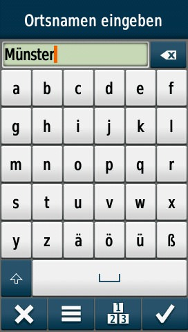
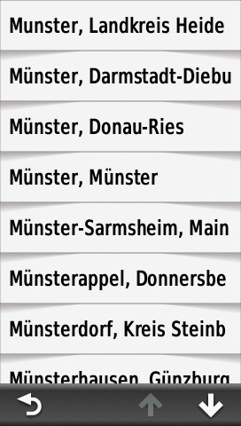
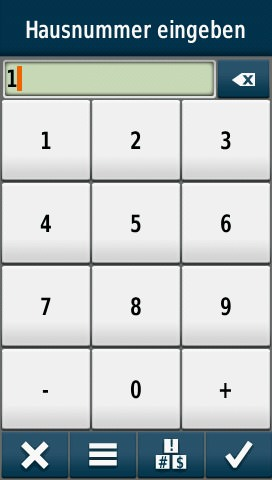
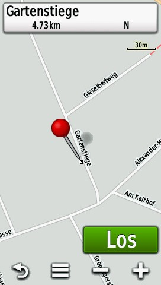
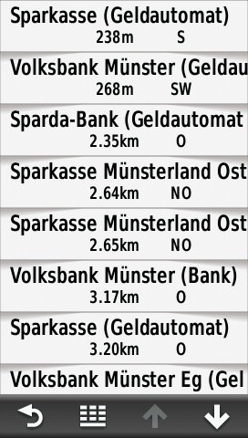

Das Konzept der Indexsuche soll an einigen konkreten Beispielen verdeutlicht werden. Alle Screenshots stammen von einem GPS-Gerät des Typs "Montana". Die Menüstruktur kann zwischen verschiedenen GPS-Gerätemodellen und -typen variieren.
Suche nach einer Adressse (Straße):
Beispiel "Gartenstiege in Münster (kreisfreie Stadt in Nordrhein-Westfalen)":
| "Adressen" auswählen | "Deutschland" auswählen | "Stadt/Ort eingeben" auswählen |
|  |  | |
| "Münster" eingeben | "Münster, Münster" auswählen | "Garten" eingeben |
|  |  | |
| "Gartenstiege" auswählen | Hausnummer auswählen | Los |
Suche nach einem kategorisierten Point-Of-Interest (POI):
Beispiel "Geldautomat":
|  | ||
| "Öffentl. Einrichtungen" auswählen | "Bank / Geldautomat" auswählen | Suchergebnisse |
Hinweis: Die Indexsuche befindet sich im Status "Erprobung" und kann in einigen Fällen inkorrekt oder unzureichend sein.